About us
Tokyo Page Press is an independent publishing studio based in Tokyo, Japan. We create relaxing, easy-to-read puzzle books for seniors — large-print word search with gentle themes, one puzzle per page, and full solutions — and a line of vintage Japanese art designs inspired by the Edo and Taisho eras. Everything is designed in Tokyo and delivered digitally or printed on demand, worldwide.
Puzzle books
Large Print Word Search Vol. 1
100 relaxing puzzles — Animals & Nature. Big, clear letters, one puzzle per page.
$9.99 (PDF)
Get it on GumroadLarge Print Word Search Vol. 2
100 relaxing puzzles — Food & Travel. Fruits, Japanese food, beaches and famous places.
$9.99 (PDF)
Get it on GumroadComplete Bundle — 230 Puzzles
Vol. 1 + Vol. 2 + Bonus 30 in one bundle. Our best value for puzzle lovers and gift-givers.
$14.99 (PDF)
Get the bundlePaperback editions are available on Amazon (search “Tokyo Page Press”).
What we do — vintage Japanese art, in three series
Alongside our puzzle books, we design original vintage-Japan artwork in Tokyo. Every design belongs to one of three series, each signed “by TPP” (TPP = Tokyo Page Press). The artwork is offered as wall-art prints and gifts — posters, T-shirts, mugs and tote bags — produced on demand by our print partners, so nothing is stocked or shipped from a warehouse.
EDO Series by TPP
Scenes of old Japan: Edo streetscapes, castles, the Tōkaidō road and Kyoto. Quiet landscapes in soft vintage colour.
Current works:
• Kyoto Pagoda in Autumn Leaves
• Castle and Cherry Blossom Sakura
• Kyoto Street at Dusk
• Castle at Sunset
• Bamboo Grove and Bridge
TAISHO ROMANCE Series by TPP
Japan of the Taisho era (1912–1926): retro streets, trams and Western-influenced architecture in nostalgic palettes.
Current works:
• Taisho Streetcar at Dusk
UKIYO-E Series by TPP
Woodblock-style prints in the spirit of Hokusai and Hiroshige — the classic ukiyo-e look of waves, mountains and seasons.
Current works:
• Great Wave, Castle and Mt Fuji
• Red Fuji — Mt Fuji in warm red tones
• Cranes and Pine
• Mt Fuji and Sakura Lake
• Koi Pond
New designs are added to each series every month.
Artwork gallery
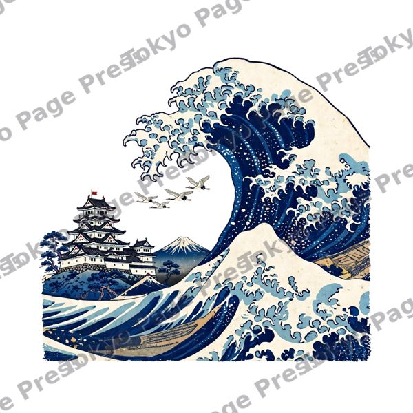
UKIYO-E SERIES BY TPP
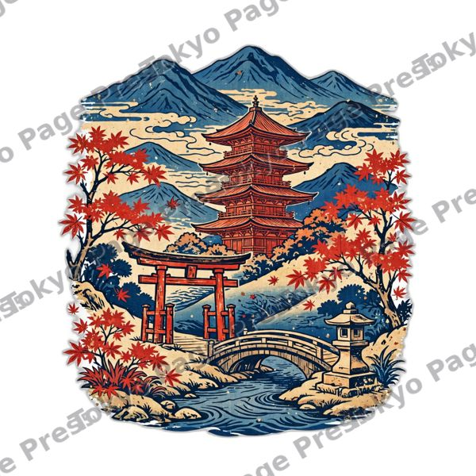
EDO SERIES BY TPP
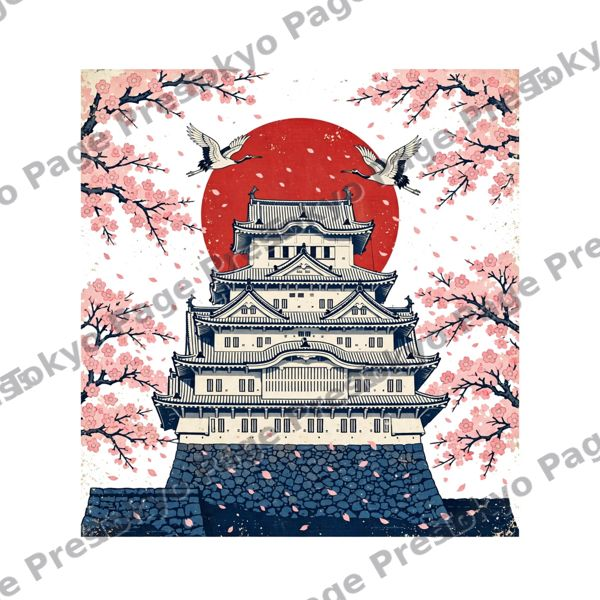
EDO SERIES BY TPP
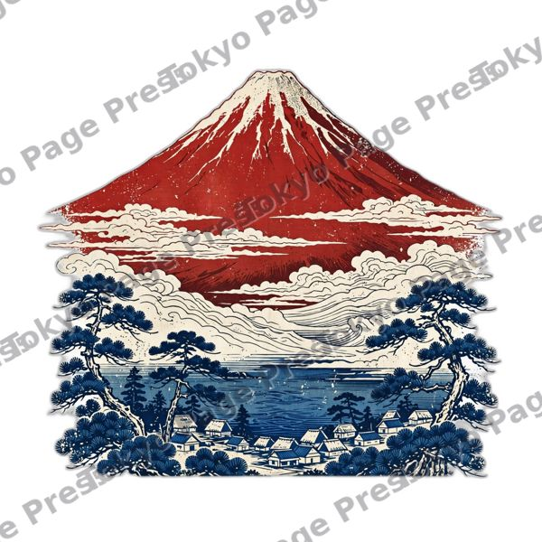
UKIYO-E SERIES BY TPP
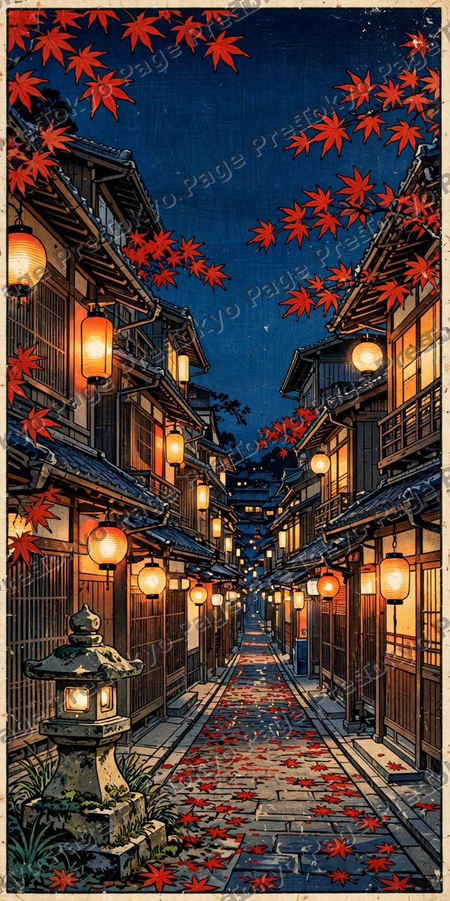
EDO SERIES BY TPP
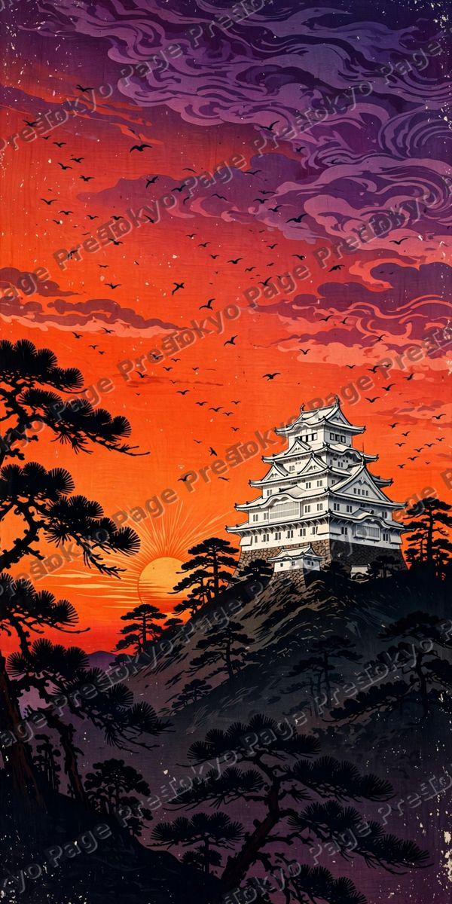
EDO SERIES BY TPP
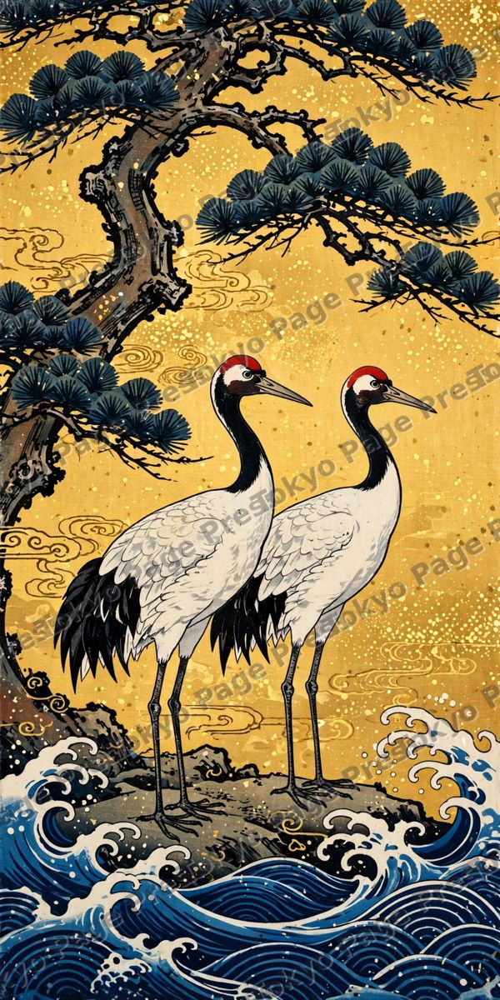
UKIYO-E SERIES BY TPP
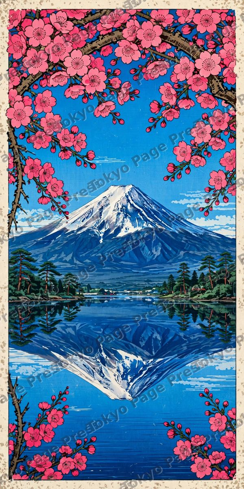
UKIYO-E SERIES BY TPP
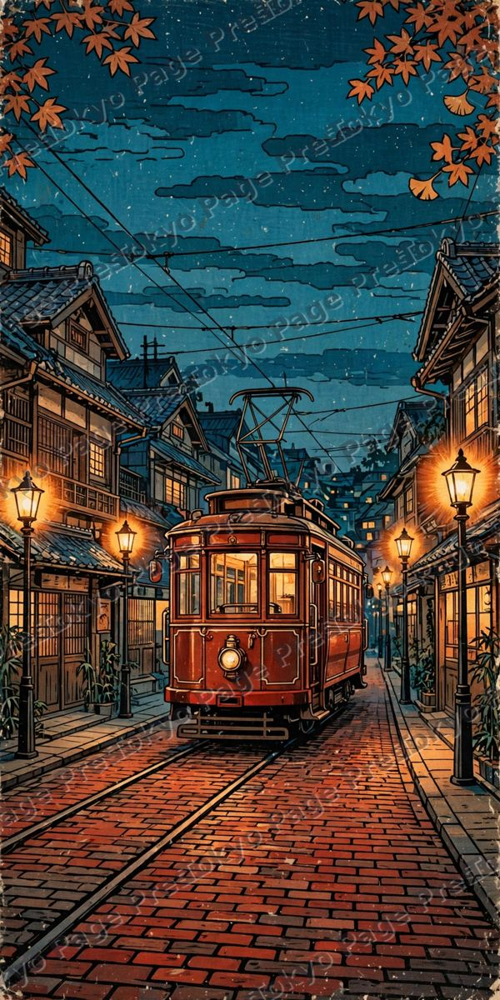
TAISHO ROMANCE SERIES BY TPP
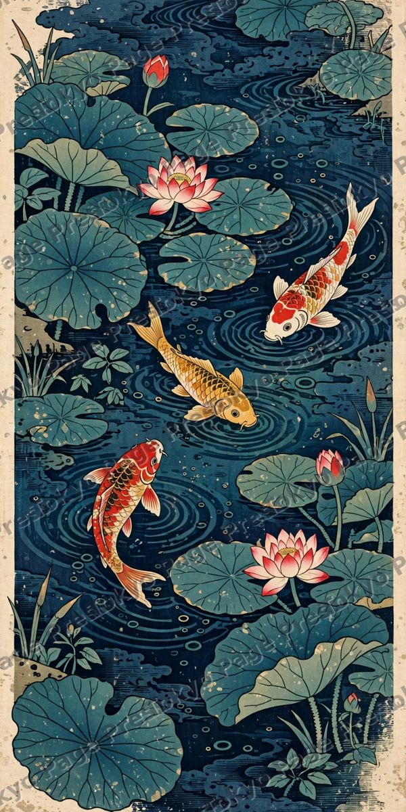
UKIYO-E SERIES BY TPP
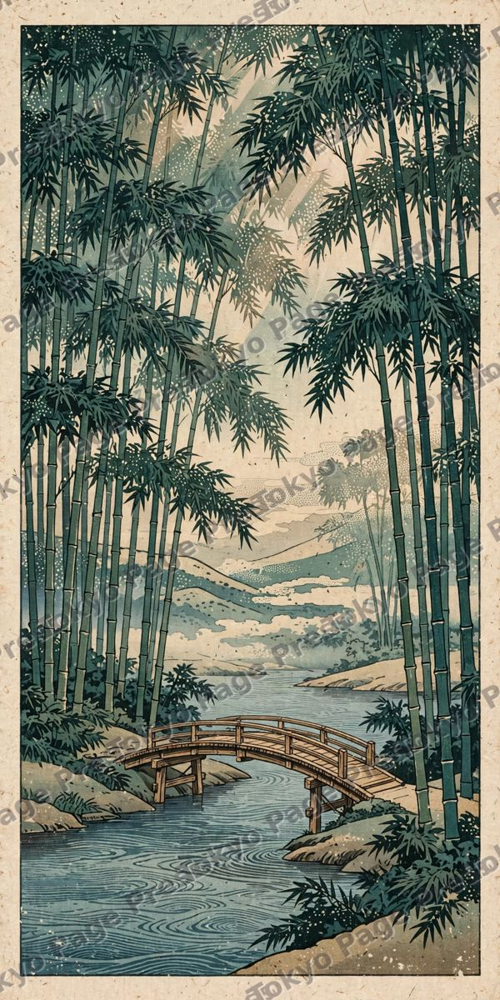
EDO SERIES BY TPP
Our artwork is also available as licensed stock illustration — links will be added here as each collection is approved.
Find us
- Shop (PDF puzzle books): tokyopagepress.gumroad.com
- YouTube (puzzle Shorts): @tokyopagepress
- Pinterest: pinterest.com/tokyopagepress
- Newsletter: tokyopagepress.substack.com